通过对人-机-物三元空间全要素实体信息的集成管理、关联分析与增强可视化，打造可视化效率高的三维GIS平台DTScope，为数字孪生铁路、数字孪生城市建设赋能。DTScope研发历程故事。
VRLAB简介
VRLAB介绍
本室在西南交通大学地球科学与环境工程学院朱庆教授带领下，汇集了国内来自西南交通大学、武汉大学、香港理工大学、香港中文大学、中南大学、国防科技大学等高校的五十余位师生。针对动态三维数字地球建模与分析这一国际学术前沿问题和国家重大需求，以该领域中的地上下室内外三维立体空间和人机物三元空间目标实体及其相互关系的抽象与表达为主线，研究了三维数字地表建模与分析和动态三维GIS与虚拟地理环境等基本问题，在数字地球、智慧城市、数字孪生铁路和防灾减灾等领域得到广泛应用。
我们的展望
努力成为本地区及全国公认的关于虚拟地理环境一流的教学与研究机构，并使我室在研究生教育、学术成果及社会贡献等方面均保持在卓越水平。
我们的使命
在有关虚拟地理环境的各个领域，全面综合地进行教学与研究，提供公共服务，致力于理论与技术创新，应用及传播，以满足国内外的需要，为社会发展做出贡献。
研究方向
研究方向介绍
针对动态三维数字地表建模与分析这一国际学术前沿问题和国家重大需求，以该领域中的地上下室内外三维立体空间和地物目标实体及其相互关系的抽象与表达为主线，研究了三维数字地表建模与分析和动态三维GIS与虚拟地理环境等基本问题。建立了统一几何、拓扑、外观与语义的多细节层次动态三维GIS模型，包括顾及特征的2.5维和3维Delaunay 三角形网络数字高程模型、面向实际车道的多层次三维道路网络模型、基于语义的多层次三维动态房产模型、多层次地理视频语义模型和面向时空变化的GIS数据模型；提出了基于约束Delaunay三角形网络模型的高精度数字地形快速建模与分析的一系列算法、基于感知测度的离散三维几何细节层次定量分析方法、以及三维模型保持语义和外观特征的自动简化算法；提出了三角形约束的立体影像自适应匹配传播的理论方法和模型驱动的建筑物立面几何重建方法，初步形成了独具特色的复杂影像特征点可靠密集匹配和复杂表面几何自动重建的技术体系，开辟了基于多角度影像自动获取高精度三维空间数据的新途径；负责研制了自主知识产权的连续地形表面和离散地物实体3维空间数据建模系统（GeoTIN，VGEGIS , CCGIS, GeoScope, LINK, OSketch,DTScope），参与制定了DEM规范、城市三维建模技术规范、室内多维位置信息标识语言、室内外多模式协同定位服务接口和室内地图数据模型与表达等国家标准，支撑了国家级和全球数字高程模型（DEM）数据库建设等应用工程。
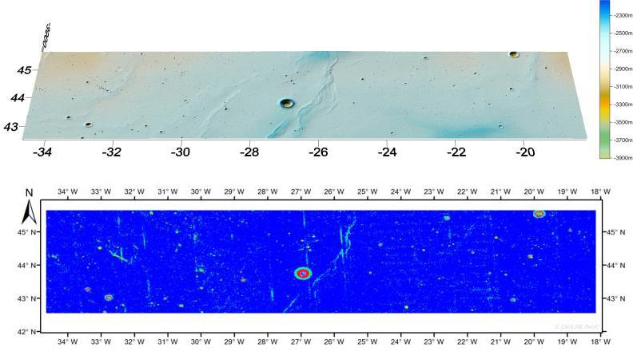
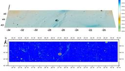
行星测绘
嫦娥三号虹湾着陆区月球地形测绘
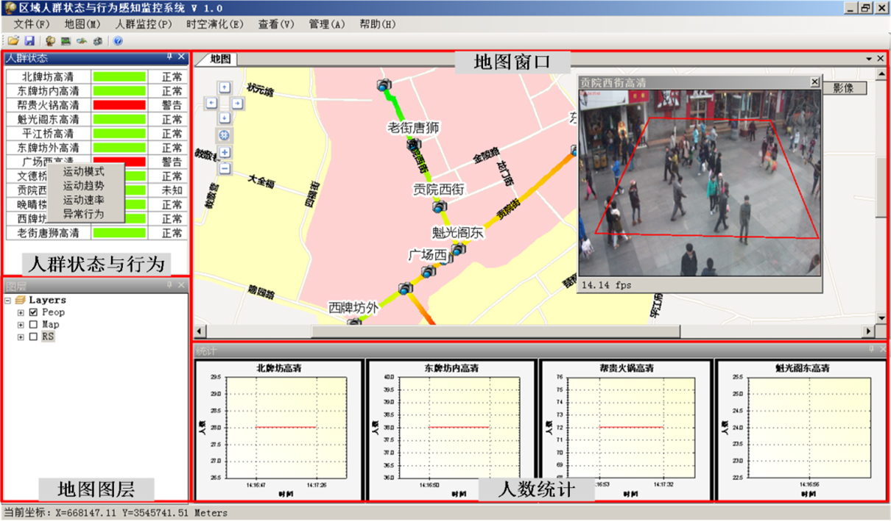
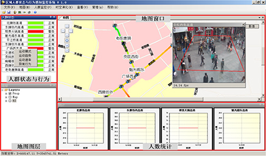
视频GIS
GeoVideo+语义+GIS
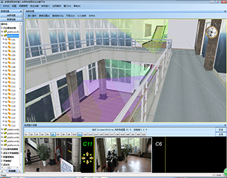
实时GIS
传感器+实时接入+GIS
BIM
BIM与GIS的集成
倾斜摄影测量
航空倾斜影像处理
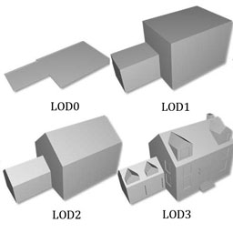
三维重建
建筑物三维模型多层次细节重建
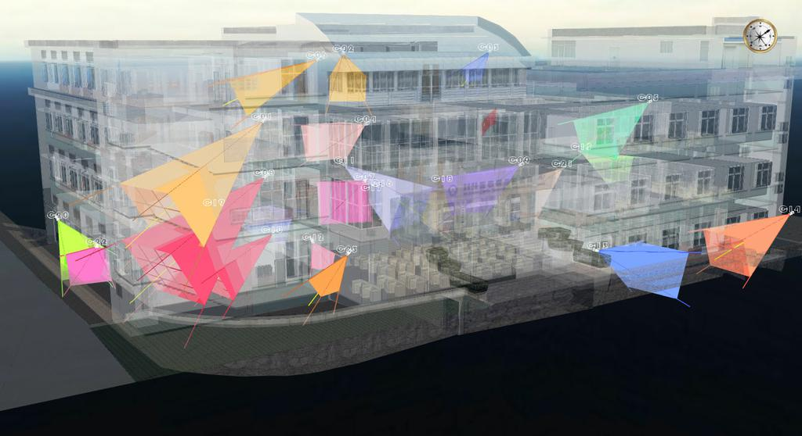
全息位置地图
泛在信息个性化地图服务
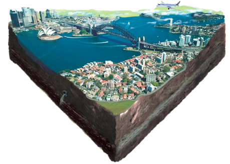
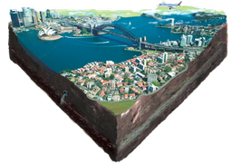
三维GIS
地上下、室内外一体化表达
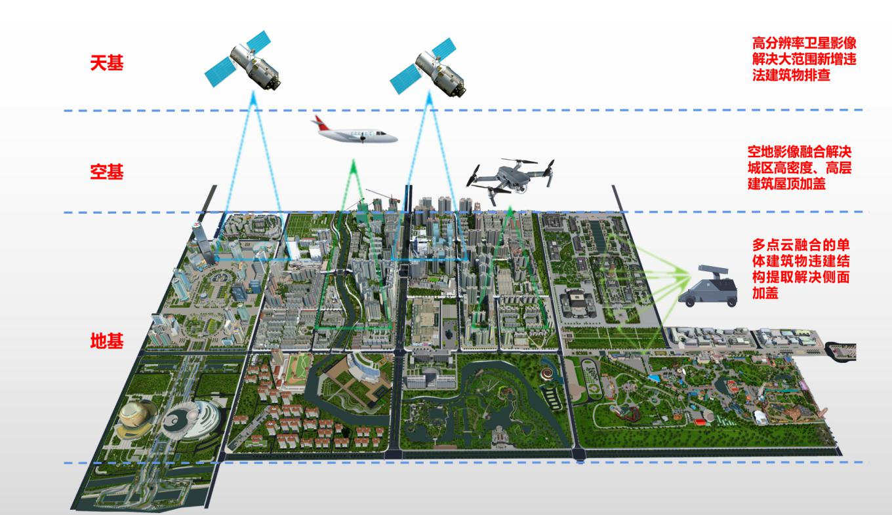
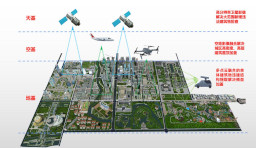
三维GIS
建筑物智能普查，摸清城市家底数据
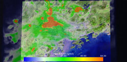
灾害多维动态模拟
大气污染物模拟
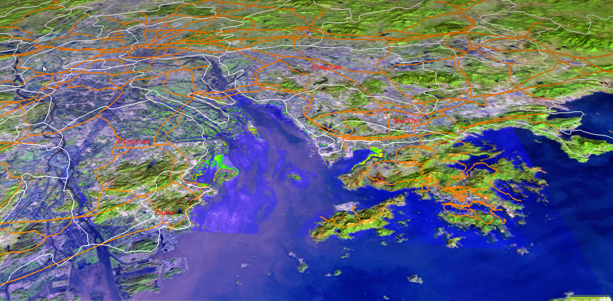
灾害多维动态模拟
水污染物扩散模拟
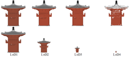
模型简化
复杂建筑物三维模型多层次细节简化
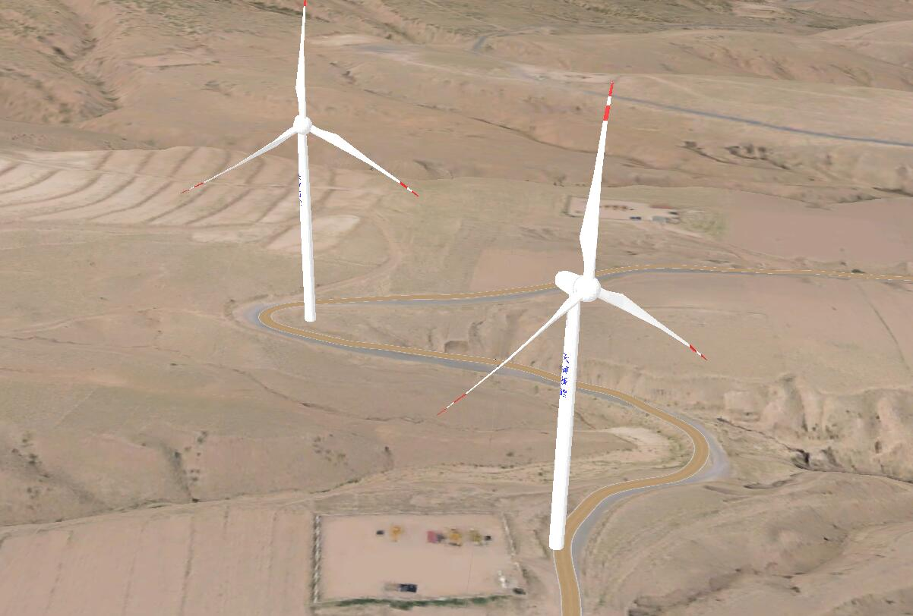
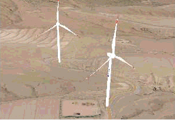
风电GIS
设计道路建模与三维场景的无缝套合
风电GIS
精密三角网计算设计道路建设工程量
研究进展
2020数字中国创新大赛决赛路演
作者：胡翰
我校朱庆教授和胡翰教授带领的VGE团队荣获2020数字中国创新大赛·数字政府赛道建筑物智能普查创新应用赛亚军，赢得10万元人民币奖金。
测绘学报首次推出文章抖音介绍，VGE创新团队率先分享文章
作者：张菁源
测绘学报首次推出文章的抖音介绍，也是测绘学报首次推出的新尝试，旨在扩大学术推广的新媒体渠道。VGE创新团队率先进行文章《面向动态关联数据的高效稀疏图索引方法》的分享，抖音视频链接。
Oblique Sketch：倾斜摄影测量交互式建模软件
完成人：胡翰
利用现有倾斜摄影测量产品，如三角网，DSM/DOM等，通过二维影像与三维三角网一起交互式勾绘方式，提高建模效率，降低三维建模软件专业要求。
RGB-D高精度室内三维重建
完成人：汤圣君
采用Kinect，Structure Sensor等RGB-D设备，进行自动室内三维建模。
成都人的绿色情怀之海绵城市
作者：胡翰
朱庆教授接收成都日报专访畅谈海绵城市建设，采访链接。
主要团队成员


本团队汇集了来自西南交通大学，武汉大学，香港中文大学，香港理工大学等高校的多位研究人员
-
朱庆，国家级特聘教授，2009年新世纪百千万人才工程国家级人选，2017年国家测绘地理信息局科技领军人才，2019年首批四川省教书育人名师，西南交通大学
- 黄波，国家级讲座教授（2016），四川省千人，香港中文大学/西南交通大学
- 袁林果，教授，入选国家级青年人才（2015），遥感青年科技人才，西南交通大学
- 高贵，教授，获得国家级青年项目（2018），地球科学与环境工程学院副院长，西南交通大学
- 胡翰，教授，入选国家级青年人才（2020），地学院测绘遥感信息系副系主任，西南交通大学
- 尹高飞，副教授，入选国家级青年人才（2020），西南交通大学
- Lutz Plümer，德国波恩大学教授，西南交通大学地学院院长
- Saeid Adam Pirasteh，加拿大滑铁卢大学博士，西南交通大学特聘副教授
- 齐华，教授，高速铁路运营安全空间信息技术国家地方联合工程实验室副主任，西南交通大学
- 邵振峰，教授，万人计划科技创新领军人才，教育部新世纪优秀人才，武汉大学
- 朱军，教授，地球科学与环境工程学院副院长，西南交通大学唐立新优秀学者，高校GIS创新人物，西南交通大学
- 吴波，教授，香港理工大学
- 杨林川，研究员，西南交通大学雏鹰学者
- 杜志强，副教授，武汉大学
- 张叶廷，副教授，武汉大学
- 刘华俊，副教授，武汉大学
- 丁雨淋，副教授，四川省青年千人，高校GIS新锐，西南交通大学
- 陈敏，副教授，雏鹰学者，西南交通大学
- 葛旭明，副教授，西南交通大学
- 徐博，助理研究员(博士后)，西南交通大学
- 曹振宇，高工，国家测绘地理信息局青年学术与技术带头人，四川省基础地理信息中心
- 王竞雪，博士后，西南交通大学
- 谢潇，博士，高校GIS新秀，浙江中海达空间信息技术有限公司
另外，还包括来自西南交通大学的近20名博士研究生和40多位硕士研究生。
新闻交流
12月23日，团队胡翰教授当选“摄影测量记录”期刊青年编委。
2021年12月10-12日，“江西省自然灾害监测预警与评估重点实验室”揭牌仪式暨第一届学术委员会会议在江西师范大学召开。朱庆应邀担任第一届学术委员会副主任，并报告了遥感减灾技术进展与动态-以四川的实践为例。
2021年12月9日，四川测绘地理信息局党组书记、局长杨宏山、副局长陈斌一行莅临四川视慧智图空间信息技术有限公司考察指导。
视慧智图市场总监朱春成就公司团队情况、发展历程、主营业务和企业愿景等方面向领导们做了详细汇报，杨宏山局长对公司发展给予了高度认可和一致好评，提出了殷切期望。
2021年10月11日，团队参研的国家标准 城市不动产三维空间要素表达（GB/T 40771-2021）正式发布实施。该标准以不动产单元（产权体）为基础，对城市不动产三维空间要素的空间和属性信息进行了统一、规范化表达，旨在支撑三维不动产管理。
2021年12月3-5日，2021年第七届空间智能学术研讨会在武汉顺利召开，朱庆应邀报告“铁路数字孪生与智能建造”。
团队吴波教授、胡翰教授、葛旭明副教授合作发表的嫦娥四号着陆区地形地貌测图与分析论文，荣获2021年度ASPRS Esri Award (First Place)。
2021年11月3日，2020年度国家科学技术奖励大会在人民大会堂举行，以我校为第二完成单位、胡翰教授为第三完成人的“自然资源卫星光学遥感测绘关键技术及立体中国应用”获国家科学技术进步二等奖。
2021年10月，VGE创新团队2021年秋季运动会在西南交通大学犀浦校区和九里校区顺利举行。
2021年10月18日-19日，中国测绘学会2021学术年会在青岛举行，朱庆应邀参会，并在泛在测绘赋能行业创新分论坛报告“自然资源实景三维表达”。会前，朱庆还应邀参加了《测绘学报》编委会。
2021年10月15日至17日，“2021中国地理信息科学理论与方法学术年会”于杭州成功举行。本次大会由中国地理信息产业协会理论与方法工作委员会主办，浙江大学地球科学学院承办，《地球信息科学学报》、浙江省资源与环境信息系统重点实验室、浙江省地学大数据与地球深部资源重点实验室和浙江省地理学会共同协办。我院师生代表共计10余人参加了本次会议，其中包含有2019级测绘专业的5名大学生受朱庆教授资助参加了本次会议。本次学术年会以“智能时空，智见未来”为主题，围绕地理信息科学理论、方法、技术、应用及产业化等多个领域，包括特邀报告、大会报告和专题报告多种形式。副院长朱军教授做了题为“一种滑坡堆积体三维建模及体积快速估算方法”的专题报告。
2021年10月13日-15日，2021中国地理信息产业大会在武汉举行，朱庆应邀参会，并分别在知识赋能-自然资源三维立体全链条智能化应用和自然资源三维立体“一张图”的实践与探索分论坛报告“自然资源三维立体一张图构建与应用”和“自然资源实景三维表达”。
2021年9月13日，测绘遥感信息工程国家重点实验室（武汉大学）举行2021级研究生新生开学典礼。吴波教授受邀远程参与典礼，并与师弟师妹们分享了自己多年来学习、科研及生活的心得感悟。测绘遥感国家重点实验室公众号整理并分享了吴波教授的发言，文章链接。
2021年9月17日，2021中国国际智能产业博览会智慧生态论坛在重庆万豪酒店成功举办，朱庆应邀报告“数字孪生与智慧生态城”，强调数字孪生城市实时动态汇聚的时空大数据为生态城市建设管理提供了整体性和系统性的变革性手段，数字孪生是促进城市大脑持续升级不可或缺的途径、提供了可持续迭代的智慧生态城创新模式。
2021年9月14日-15日，国家重点研发计划项目“全空间信息系统与智能设施管理”课题绩效评价会在北京举行。朱庆教授主持完成的“多模态时空对象分析与可视化”课题圆满完成了预期考核指标，以优异成绩通过绩效评价。
2021年9月4-9日，第十九届中国西部海外高新科技人才洽谈会在成都举行，朱庆应邀在中国科学院青年科学家论坛报告“铁路数字孪生与智能建造”。
7月28日-30日，雷达与信号处理技术及应用研讨会于西安举办，团队胡翰、丁雨淋、毛顺福参会。胡翰担任“专题六：雷达干涉测量及应用技术”程序委员会委员，并作题为“面向国家新型测绘任务的 InSAR 高精度地形建模”的特邀报告。
2021年7月27日，朱庆教授指导的宁新稳和李赟顺利通过了博士学位论文答辩。答辩委员会成员有：深圳大学郭仁忠院士、香港浸会大学社会科学院副院长周启鸣教授、兰州交通大学国家级特聘教授闫浩文院长、武汉大学国家级青年人才应申教授和西南交通大学国家千人计划李志林教授。
第八届中国可视化与可视分析大会 (ChinaVis 2021) 于2021年7月24日-27日在武汉举行，朱庆应邀作为嘉宾参加“圆桌论坛：可视化如何在服务国家和社会发展中发挥重要作用？”，并做了“铁路数字孪生与智能建造”的邀请报告。
2021年7月7日，川藏铁路有限公司在成都组织召开《川藏铁路地理地质信息交付标准》（送审稿）审查会。国铁集团科信部、中国铁设、中国铁道学会、中南大学、成都理工大学、铁二院、铁一院、铁科院、创新公司、西南交通大学等单位的专家和代表参加了会议。专家一致同意通过该标准送审稿的初审，并建议按标准性技术文件尽快报批，并纳入国铁集团技术标准体系。
2021年6月29日，传承红色基因，接续百年奋斗，中共西南交通大学委员会“两优一先”表彰大会暨“光荣在党50年”纪念章颁发仪式隆重举行，集中表彰一批优秀共产党员、优秀党务工作者和先进基层党组织，庆祝建党100周年，激发全校共产党员和广大师生员工干事创业的强大精神力量。朱庆教授被中共四川省委教育工委表彰为“全省高等学校优秀共产党员”，丁雨淋副教授荣获“西南交通大学2019-2021年度优秀共产党员”称号。
2021年6月12日-14日，全国地图学未来发展研讨会，暨地图学系列丛书编著研讨会和地理国情监测技术应用国家地方联合工程研究中心学术会议在兰州举行，朱庆、朱军和李志林应邀参会。朱庆主持了王家耀院士和郭仁忠院士的大会报告，李志林做了特邀报告，朱军介绍了《空间信息可视化》书稿编著情况。
2021年5月15日7时18分，天问一号探测器成功着陆于火星乌托邦平原南部预选着陆区，中国首次火星探测任务着陆火星取得成功。吴波教授率领其团队负责了火星地形地貌分析、协助选取候选着陆区的工作。
吴波教授接受了中新社的专访，新闻链接：助力“天问一号” 见证并参与历史——访香港理工大学教授吴波。
2021年5月15日，朱庆教授指导的博士生李世明在x6104会议室顺利通过博士学位论文答辩。答辩委员会主席为中科院水利部成都山地灾害与环境研究所李爱农研究员，委员会成员有电子科技大学许文波教授、西南交通大学朱军教授、尹高飞教授、胡翰教授。
2021年5月22日，朱庆教授指导的陈媚特、张曼迪、赵新瑞、赵甫卿、尚戴雨，丁雨淋副教授指导的陈曦、冯耀，陈敏副教授指导的赵曦、谭贵红，黄波教授指导的苟强在x6104会议室进行了学位论文答辩。答辩委员会主席为西南交通大学朱军教授，委员会成员有电子科技大学周艳副教授、四川测绘地理信息局曹振宇高工、西南交通大学胡翰教授、丁雨淋副教授、陈敏副教授。十位同学均顺利通过了本次答辩。
2021年5月1日，VGE创新团队全体会议在西南交通大学犀浦校区6104室顺利举行，朱庆教授作了从数字地面建模到数字孪生铁路的报告，丁雨淋副教授对川藏铁路阶段性工作进行了总结表彰，在读博士生郭永欣、吴浩宇作了川藏铁路三维平台相关工作报告。
2021年4月30日，王竞雪教授博士后出站答辩以视频会议方式顺利举行。王竞雪博士后合作导师为朱庆教授。出站答辩专家组由武汉大学张永军教授、中国测绘科学研究院张力研究员、西南交通大学刘国祥教授、高贵教授和胡翰教授组成。各位专家对王竞雪博士后在站期间取得的成果给与了高度评价，并对后续研究提出了宝贵的建议。经讨论，专家一致同意王竞雪教授通过西南交通大学博士后出站答辩。
2021年4月29日，川藏铁路有限公司在成都组织召开国铁集团科技研究开发计划重大课题“川藏铁路地理地质信息交付标准及集成表达技术研究”开题报告评审会。国铁集团川藏办、中科院山地所、成都理工大学、中铁四院、中铁十一局、十二局、十八局、大桥局、四川省公路院、铁科院、创新公司、铁二院、铁一院、西南交通大学等单位的专家和代表参加了会议。经专家组的质询与讨论后，一致同意该课题开题。
2021年4月27日，中铁十二局集团2021年重点工程“先锋杯·十比两创”综合管控劳动竞赛启动会在高原铁路康定2号隧道工区隆重举行，相关领导专家现场观摩了VGE团队参与研建的中铁十二局集团川藏铁路数字孪生与智能建造平台。
4月16日，团队胡翰教授应IEEE GRSS学会邀请，担任遥感领域权威SCI期刊IEEE JSTARS杂志副主编。
4月13日下午，西南交通大学第一届“科技新星”计划启动暨开题报告会在犀浦校区272会议室举行。朱庆教授提名丁雨淋副教授入选。
2021年4月11-12日，国家自然科学基金《川藏铁路重大基础科学问题专项》2020年度会议在西藏林芝召开，朱庆代表“川藏铁路灾害风险信息集成与共享服务”课题参会。会议期间，还应邀到铁一院指挥部和川藏铁路公司进行了访问交流。
2021年4月6日，川藏公司组织的全线参建单位“一隧一桥”试点示范工程现场观摩会，在先期开工点举行。团队丁雨淋副教授汇报展示了隧道数字孪生与绿色智能建造平台的建设与应用情况，该平台由西南交通大学VGE团队与中铁18局、铁科院等单位合作研制，是川藏铁路全线第一个数字孪生平台。
2021年3月20日，VGE团队成员胡翰教授、葛旭明副教授带领团队同学与四川省公路设计院一同在都映高速公路进行了高速公路信息化建设调研实验。
2021年2月23日-24日，西南交通大学VGE团队到访大渡河特大桥和康定2号隧道工地现场调研科技创新与信息化工作。
2021年2月19日-20日，西南交通大学VGE团队到访康定2号隧道项目部调研科技创新与信息化工作。
2021年2月8日，“孪生川藏铁路BIM技术交流咨询会” 通过线上线下结合的方式举行。四川西南交大铁路发展股份有限公司、西南交通大学上海研究院、四川视慧智图空间信息技术有限公司、西南交通大学相关专家，对孪生川藏铁路BIM相关技术需求进行了研讨。VGE团队朱庆教授、丁雨淋副教授等参加了此次会议。
2021年2月3日，VGE团队成员胡翰、丁雨淋、葛旭明在都汶高速公路与四川省公路院一同进行了高速公路信息化建设调研。
《高速铁路技术》2020年度期刊优秀论文评选结果于近日揭晓，经专家组评审，共评选出年度优秀论文17篇。朱庆、朱军、黄华平、王玮和张利国发表在2020年11卷第2期的论文“实景三维空间信息平台与数字孪生川藏铁路”被评为《高速铁路技术》2020年度特等优秀论文。
2021年1月18日下午，“数字隧道构建技术咨询会” 通过线上线下结合的方式举行。中国铁道科学研究院集团有限公司梁策研究员，西南交通大学仇文革教授，VGE团队朱庆教授、朱军教授、丁雨淋副教授参与了本次会议。
2021年1月10日，西南交通大学组织川藏铁路有限公司、中铁二院工程集团有限责任公司、中铁第一勘察设计集团有限公司、中国铁道科学研究院集团有限公司、川藏铁路技术创新中心有限公司等单位专家，采用线上线下结合方式，研讨修改中国国家铁路集团有限公司企业标准《川藏铁路地理地质信息交付标准》（草案），形成送审稿。草案还通过网络评审方式听取了中国地质调查局发展研究中心和中国铁路设计集团有限公司专家的意见。该标准的起草得到了中国国家铁路集团有限公司科技研究开发计划重大课题资助。
2021年1月2-4日，粤港澳大湾区智慧社会建设研讨会在深圳成功举行，朱庆应邀参会。
2020年12月30日，自然资源部应急测绘技术创新中心（以下简称“创新中心”）2020年技术委员会会议、管理委员会会议在成都召开。中国工程院院士、创新中心技术委员会主任李建成、四川测绘地理信息局局长杨升、副局长刘宇等专家和领导分别以线上或线下的方式参加了相关会议。创新中心技术委员会副主任朱庆教授受李建成院士委托主持了技术委员会会议，创新中心管理委员会副主任刘国祥院长参加了管理委员会会议。
2020年12月26日，VGE团队年会通过线下线上结合的方式圆满举行。朱庆教授对2020年VGE团队科研工作进展进行了表彰总结。
2020年12月27日，国家重点研发计划“全空间信息系统与智能设施管理”2020年度课题进展检查会议通过线上线下结合的方式举行，国家科技部高技术中心专项办徐泓处长，王家耀院士，郭仁忠院士和周成虎院士等专家参与了会议。
我校地球科学与环境工程学院朱庆教授和胡翰教授带领的VGE团队荣获“华为云杯”2020人工智能创新应用大赛冠军，赢得10万元人民币奖金。
2020年12月5至6号，第五届全国地图学理论与方法研讨会在武汉顺利召开。朱庆应邀参会，并做了数字孪生川藏铁路之语义级视觉变量的学术报告。本次研讨会主要是围绕“跨越自然和人文的地图学”主题，集中研讨地图学前沿、热点问题和发展趋势，反映我国地图学理论与方法的最新成果，推动地图学理论与方法创新。
12月3日上午，土豆数据董事长兼CEO来我室交流，团队胡翰、丁雨淋、陈敏、葛旭明、徐博、郭永欣等师生参与，双方就数字孪生、通用空间智能、倾斜摄影测量等方面进行了讨论。
2020年11月24-26日，海南省测绘地理信息学会第九届理事会换届大会暨2020学术年会在海口成功举行。朱庆应邀参会，并报告“自然资源实景三维表达与立体监测”。
2020年11月20日至11月22日，第六届激光雷达大会在北京举办，团队师生胡翰教授、葛旭明副教授、张菁源参会。
第六届激光雷达大会于11月20-22日于北京举办，团队成员胡翰受邀主持分会场并做主题报告。
第七届高分年会于11月17-19日于长沙举办，团队成员胡翰受邀于卫星总体设计分论坛做主题报告。
2020年10月27-29日，中国测绘学会 2020 学术年会在郑州举行。本次学术年会围绕“万物互联智绘驱动——新测绘新发展”主题，集中呈现测绘地理信息领域发展趋势。同期举办的第十届中国测绘地理信息技术装备博览会，集中展出了测绘地理信息领域的高精尖装备和最新成果。朱庆主持的项目成果“应急测绘智能服务关键技术及重大应用”荣获测绘科学技术一等奖，朱庆指导的博士曹振宇荣获青年科技创新人才奖。朱庆应邀在“创新发展·智慧引领-构建新型测绘服务模式”分论坛报告了获奖成果。会前朱庆还应邀参加了《测绘学报》2020 年编委会会议。
2020年10月22-24日，中国地理信息产业大会于南宁召开，胡翰教授受邀主持“数字孪生与通用地理空间智能”分论坛，并做题为“智慧城市实景三维建模”的主题报告。
2020年10月22-24日，由中国铁道学会主办、主题为“轨道交通智能化发展”的第二届中国铁路发展论坛在北京举行。朱庆应邀在“轨道交通工程智能建造技术与装备”分论坛报告“数字孪生川藏铁路实景三维空间信息平台关键技术”。
2020年10月12日-2020年10月17-21日，中国地球科学联合学术年会在重庆成功举办。在国家自然科学基金专项项目“川藏铁路重大灾害风险识别与预测”的支持下，朱庆应邀参与组织了“川藏铁路重大地质灾害：致灾机制、隐患识别与风险预测”专题论坛，并报告“川藏铁路灾害风险信息集成与共享服务”。
2020年10月12日-10月14日，由工业和信息化部、福建省人民政府共同主办，福州市人民政府、阿里云计算有限公司等联合承办的第三届数字中国建设峰会在福州召开，数字中国创新大赛是数字中国建设峰会的重要组成部分。朱庆教授和胡翰教授带领VGE团队荣获2020数字中国创新大赛·数字政府赛道建筑物智能普查创新应用赛亚军，博士生陈琳、于昊加、廖成代表我室受邀参加数字中国创新大赛·数字政府赛道颁奖仪式。
2020年9月23-25日，中国测绘学会工程测量分会2020学术年会在重庆召开，朱庆应邀报告“自然资源实景三维表达与立体监测技术”。
2020年09月20日，朱庆教授指导的博士生王峰，以视频会议形式，顺利通过博士学位论文答辩。答辩委员会主席为国家千人计划学者桂林理工大学周国清教授，委员会成员有首批国家卓青获得者武汉大学眭海刚教授、香港理工大学吴波教授、西南交通大学朱军教授和国家优青高贵教授。
2020年9月16-18日，由国际测量师联合会（FIG）组织的“一带一路”沿线国家的测绘标准与实践国际研讨会（International Workshop on Professional Standards and Practice of Surveying and Mapping in the Countries along the Belt and Road Routes）在浙江德清成功举行，朱庆应邀做了主旨报告“General Geospatial Intelligence（通用地理空间智能）”。
2020年9月16日下午，中铁第一勘察设计院测研院龚江峰院长、田设权副院长、武瑞宏总工程师、刘亚林所长、朱郭勤所长一行到访实验室参观。刘成龙教授、胡翰教授、陈敏教授、郭永欣博士生等人参与了讨论交流。
8月12日至15日，团队成员胡翰教授与丁雨淋副教授，受邀参与云贵川艰险地区机载毫米波InSAR测图示范应用的试生产实验。
2020年7月19-24日，朱庆参加国家自然科学基金专项项目“川藏铁路重大灾害风险识别与预测”组织的野外考察工作，实地考察了川藏铁路沿线典型重大灾害现场。
2020年7月21日下午，自然资源厅办公室召开四川省自然资源科研项目验收会，团队师生朱军、丁雨淋、陈媚特参会。朱军教授作题为“自然资源要素三维实体化建模与一体化管理关键技术研究”的汇报。
2020年7月16-19日，第二届高原科学与可持续发展论坛在青海省西宁市成功举行，朱庆应邀参会，并在遥感大数据与高原可持续发展高峰论坛报告“自然资源实景三维表达与立体监测”。在会议期间，朱庆还参加了数字青海和青海省大数据中心建设方案的研讨。
2020年7月15-19日，葛旭明副教授、李世明博士生前往江西南昌，与中国电建江西院一行开展“融合多源数据的林木自动识别及精细化建模研究”项目研讨和实地勘探。
2020年7月16日上午，阿里巴巴达摩院专家应邀到访VGE实验室，达摩院机器智能实验室资深专家李昊作了题为“计算机视觉行业探索与实践”的报告，并与朱庆教授，胡翰教授，丁雨淋副教授，陈敏副教授，徐博助理教授以及中南大学李海峰教授进行了深入的交流讨论。
2020年7月12日，国家自然科学基金专项项目“川藏铁路重大灾害风险识别与预测”野外考察工作从川藏铁路总设计单位中铁二院工程集团有限责任公司出发。朱庆教授带领VGE课题组成员参加了在成都首站的相关调研活动。
我校朱庆教授和胡翰教授带领的VGE团队荣获2020数字中国创新大赛·数字政府赛道建筑物智能普查创新应用赛亚军，赢得10万元人民币奖金。
2020年7月6日，国家基础地理信息中心 全球地理信息资源部主办的“全球地理信息资源建设与维护更新星载SAR测图生产技术流程评审会议”采用视频会议方式成功举行，国地信田海波主任出席并致辞。西安测绘研究院楼良盛、西安电子科技大学李真芳教授、我室胡翰教授，四川、龙江、陕西各省局专家应邀参会。会议由国家基础地理信息中心张宏伟处长主持；会上陈利军汇报了星载SAR测图生产技术规程，以及基于星载SAR测图技术试验情况。会议最终形成了《全球地理信息资源建设与维护更新星载SAR测图生产技术规程》。
2020年7月3日，国家基础地理信息中心召开了星载SAR测图生产技术交流会，黑龙江测绘地理信息局、四川测绘地理信息局、陕西测绘地理信息局共计50余生产作业专家参会，VGE团队胡翰、丁雨淋，受邀参会，会议由全球地理信息资源部陈利军老师主持。张宏伟处长首先介绍了2020年度全球地理信息资源建设与维护更新项目的要求。陈利军老师介绍了由国家局组织，各省局、测科院、西南交大共同编写的星载SAR测图技术规程。胡翰报告面向星载SAR的DEM生产作业软件LINSAR。LINSAR智能滤波与定向精准编辑软件，是由我团队自主研发，是一款集智能点云滤波、DEM交互式编辑、可视化及精度评价于一体的新型专业高效高精度DEM生产工具，产品在线介绍。
2020年6月28日晚，深圳市规划和自然资源局空间信息管理处、自然资源部城市国土资源监测与仿真重点实验室联合主办的2020《开放论坛》第2讲线上学术报告成功举办。胡翰教授应邀作了题为“空地一体的倾斜摄影测量精细三维重建”的学术报告，报告介绍了全球数字高程模型生产和数字城市建设等领域应用的情况。
2020年6月20日-6月21日，VGE创新团队一年一度的新学年全体新生培训以腾讯会议的方式顺利举行，朱庆教授代表团队欢迎新同学，同时胡翰教授、丁雨淋副教授、葛旭明副教授等老师为2020级新生进行了论文写作、软件研发及软件操作等方面的培训。
2020年6月6日，地球科学与环境工程学院VGE团队的2020年毕业派对在西南交通大学犀浦校区X6104圆满举行。
2020年5月29日下午，中国航天科工二十三所韦立登博士一行应邀到访我室，并与胡翰教授，丁雨淋副教授，李世明博士生等进行了深入交流讨论。
2020年5月28日晚，众智大讲堂高校测绘地理信息优秀成果展播五月期第四场线上跨学科协同交叉学术报告成功举办。朱庆教授应邀作题为“自然资源实景三维表达技术”的学术报告。
2020年5月27日，中国测绘地理信息学会组织专家对自然资源部四川基础地理信息中心牵头完成的“应急测绘智能服务关键技术及重大应用”成果进行了评价，以孙九林院士为组长的专家组认为项目成果整体达到国际先进水平，其中基于机器学习的灾害典型要素智能识别与精准提取，以及DSM智能滤波达到国际领先水平。
2020年5月23日，朱庆教授指导的王登星、许濒支、陈柏行、张蜜儿、庞达、孙昆襄，丁雨淋副教授指导的彭琪、张如鹏，陈敏副教授指导的严少华、赵怡涛，黄波教授指导的谢铖，以视频会议形式，顺利通过硕士学位论文答辩。答辩委员会主席为中南大学李海峰教授，委员会成员有电子科大黄方副教授、四川测绘地理信息局曹振宇高工、西南交通大学朱军教授、胡翰教授。
2020年2月24日，四川省科学技术厅对2020年第一批省级科技计划项目进行了公示，其中“遥感监测与灾害应急四川省青年科技创新研究团队”项目由朱军教授牵头，成员包括袁林果、高贵、赵锐、胡翰、遆鹏、曹云刚、张瑞、叶沅鑫、尹高飞、慎利、丁雨淋、陈敏、王晓文、胡亚等。本团队基于西南交通大学测绘科学与技术一级学科，依托“高速铁路运营安全空间信息技术国家地方联合工程实验室”和“自然资源部应急测绘技术创新中心”，瞄准地质灾害防治和高速铁路安全运营等国家重大需求，以空间数据获取与处理、灾害监测与预警、风险评估与模拟分析、应急信息服务研究为主线，侧重开展遥感监测与灾害应急理论、方法和技术方面的系统性研究。
2020年5月11日，国铁集团川藏办组织召开了“川藏铁路地质地理信息平台建设专题会议”，会议通过川藏铁路建设周例会网络视频方式，科信部、工管中心、鉴定中心、川藏公司、铁科院、铁二院、铁一院、大桥院等单位领导与技术负责人参加了会议，朱庆作为特邀专家参会。
2020年5月6日下午，由长安大学牵头的国家自然科学基金《川藏铁路重大基础科学问题专项》项目四“川藏铁路重大灾害风险识别与预测”启动会以视频会议形式成功举办，长安大学党委书记陈峰教授等领导出席并致辞。朱庆教授作为其中课题五“川藏铁路灾害风险信息集成与共享服务”负责人进行项目实施方案和研究进展汇报。
2020年3月28日上午，VGE创新团队全体师生视频会议顺利举行。会议上对2020 上半年博士硕士学位论文答辩进行了安排，同时汇报了小组各项目的进展。此外，王登星同学还分享了在阿里实习的所见所闻与感想。
2020年3月20日晚，北京建筑大学教师发展中心第五场线上跨学科协同交叉学术报告成功举办，朱庆教授应邀作主题报告。
2020年2月27日，朱庆教授被选聘为四川省首批地质灾害应急管理专家。
“大数据环境下高精度道路地图众包测绘与动态更新技术”成果荣获2019年度教育部科技进步一等奖。
2020年1月17日，成都市金牛区人民政府余戬副区长一行专程到西部地理信息科技产业园慰问四川视慧智图空间信息技术有限公司朱庆教授。
2020年1月5日，国家自然科学基金川藏铁路重大基础科学问题专项项目启动会在北京顺利召开，会上对五个项目分别进行了汇报。国家自然科学基金委领导及专项项目执行专家，对项目目标、科学问题及实施方案等内容进行了指导。
2019年12月24日上午，厦门大学王程教授应邀到访VGE实验室，并在X6104会议室作了题为“激光雷达三维感知”的学术报告，胡翰、葛旭明、丁雨淋、徐博等师生参与了讨论交流。
2019年12月8-12日，由自然资源部网络安全和信息化领导小组办公室主办的2019年现代信息技术驱动自然资源管理创新高级研修班在成都顺利举行。朱庆应邀报告“自然资源三维实景技术”。
2019年12月09日上午，超图软件公司宋关福总裁一行应邀访问VGE实验室，进行了深入交流。
中国测绘学会摄影测量与遥感专业委员会2019年学术年会，于12月6日-8日在北京建筑大学举办，团队成员朱庆、胡翰与陈敏参会。
2019年12月3日，四川省城市信息化测绘工程技术研究中心共建协议签字仪式在成都顺利举行，朱庆代表西南交通大学在协议上签字，并做了特邀专家技术报告。武汉大学、西南交通大学、成都理工大学、广东南方数码科技股份有限公司参与共建成都市勘察测绘研究院获四川省科学技术厅批复的“四川省城市信息化测绘工程技术研究中心”。
2019年11月30日，地理空间建模与可视化博士生论坛于武汉大学资源与环境学院召开，团队成员胡翰应邀做主题报告。
2019年11月27日，朱庆教授指导的博士生刘铭崴、张骏骁和冯斌，顺利通过博士学位论文答辩。答辩委员会主席为华一新教授，委员会成员有李海峰教授、李爱农教授、朱军教授和高贵教授。
2019年11月25日，VGE团队与四川省公路院协同作战，利用移动测量系统采集了都汶高速公路约6公里路段的车载点云和全景影像数据。
2019年11月23日上午，陕西天润科技的李俊副总一行到访VGE实验室，并与朱庆教授、胡翰教授、丁雨淋副教授等进行了讨论交流。
2019年11月21日，中国航天科工二十三所的高级工程师李爽到访实验室交流机载毫米波雷达InSAR的DEM生产问题。
2019年11月15-17日，International Conference on Geomatics in the Big Data Era在桂林成功举行。朱庆应邀担任大会委员，并做主题报告，及主持分会场报告。
2019年10月31至11月1日，第七届全国虚拟地理环境会议在福州大学举办，团队师生朱庆、胡翰、冯斌、张蜜儿、尚戴雨、赵媛媛参会。
2019政务大数据公共服务研讨会，于10月26日在湘西州举办，胡翰受邀参会并做报告
2019年10月18-20日，第16届中国地理信息科学理论与方法学术年会在中国上海举办，朱庆资助五名本科生参会。
2019年10月15-18日，中国测绘学会2019学术年会在南京成功举行，朱庆教授做特邀报告。
2019年10月10日-13日，第三届新型空间信息技术与海岸带监测学术论坛在宁波成功举行,朱庆教授做特邀报告
2019年10月7-8日，德国慕尼黑工业大学Uwe Stilla教授一行三人应邀访问我院，并作主题报告。
2019年9月27日上午，中国测绘科学研究院刘纪平副院长一行到访我室，听取了团队朱军教授承担的国家重点研发计划课题“大规模复杂灾害场景融合与增强可视化”的相关研究进展，并就当前研发中存在的问题提出了宝贵意见，相关课题项目组成员、胡翰教授、丁雨淋副教授等参与了讨论交流。
一年一度的铁路测绘六大设计院测绘单位+西南交通大学测绘学科主要负责人参加的2019年铁路测绘技术及管理交流会在天津成功举行。
2019年9月28日，重庆交通大学举办测绘科学于技术学科研究生论坛，胡翰教授做特邀报告。
2019年9月23-26日，由自然资源部人事司组织的2019年度青年专业技术人员研修班在北京宽沟成功举行，朱庆教授应邀报告“自然资源立体调查监测与实景三维管理”。
2019年9月23日上午，武汉大学测绘遥感信息工程国家重点实验张过教授应邀到访VGE实验室，并在X6104会议室作了题为“全球战略地图研制与应用”的学术报告，朱庆教授、刘国祥教授、胡翰教授、丁雨淋副教授等参与了讨论交流。
2019年9月17日下午，Youness Dehbi博士在我院X4431室做应邀介绍了三维结构化重建方面工作。
2019年9月16日上午，江西省电力设计院勘测公司总经理程铁洪、测绘工程部主任工程师骆斌、摄影测量与遥感中心主任黄磊等一行到访实验室交流。
2019年9月10日，第二届“航天天绘杯”高分北斗技术与应用解决方案大赛颁奖典礼暨雁塔高端论坛在西安成功举行，朱庆教授应邀参会并做大会报告“倾斜摄影测量三维精细建模”。
2019年9月3日上午，Esri中国西南区总经理杜佃瑞一行应邀到访我室，朱庆教授、Lutz Pluemer院长、Saeid Adam Pirasteh副教授等人就 “ GeoAI Smarter Map and LiDAR Esri China-SWJTU Centre of Excellence ” 进行了讨论交流。
2019年9月1日，VGE创新团队一年一度的新学年全体会议在西南交通大学犀浦校区6104顺利举行，朱庆教授代表团队欢迎新同学，并在新学年之初寄语大家团结奋斗最幸福。同时徐博博士后和吴浩宇硕士生分别分享了访美工作和留法学习的经历。
2019年8月28日下午，中铁二院蒋良文副总工程师一行应邀访问我室，朱庆教授、朱军教授、胡翰教授、丁雨淋副教授等人就数字孪生川藏铁路空间信息平台关键技术进行了讨论交流。
2019年8月28日下午，武汉大学资源与环境科学学院应申教授应邀到访VGE实验室，并在X4243会议室作了题为“应用3DGIS实现三维产权管理”的学术报告。
2019年8月23日，由甘肃省地理信息产业协会和甘肃伯骊江3D打印科技有限公司共同主办的“三维空间智能可视化管理技术高端论坛及应用交流会”在兰州成功举行。2019 年 8 月 23 日-27 日，国际数字地球学会中国国家委员会数字山地专业委员会2019 年(第五届)学术研讨会在南昌成功举行。
2019年8月15-17日，主题为“智能+测绘助力自然资源新发展”的第七届测绘科学前沿技术论坛在西安成功举行，朱庆教授应邀报告了“数字孪生川藏铁路实景三维空间信息平台关键技术”，并主持了主题报告。
2019年8月15日，朱庆教授、胡翰教授、丁雨淋副教授、小组4名同学赴西安与中铁第一勘查设计研究设计院集团有限公司副总工程师兼国家重点实验室常务副主任任晓春、兰州交通大学测绘与地理信息学院副院长刘涛教授等进行川藏铁路实景三维空间信息系统平台项目交流。
The 9th session of the UN-GGIM was held on 7-9 August 2019 at the United Nations Headquarters in New York.
2019年8月9日，中国测绘科学研究院摄影测量与遥感研究所张力所长应朱庆教授邀请到我室进行访问交流。
2018年12月28日，由中国铁路设计集团有限公司、西南交通大学和四川视慧智图空间信息技术有限公司等联合起草的《轨道交通地理信息数据规范》国家标准正式发布实施。
2019年8月1日，国家基础地理信息中心田海波副主任、地理国情监测部贾云鹏副处长、李力勐副处长，四川测绘地理信息局倪文辉副局长、国土处石江南副处长一行专程到视慧智图公司就全球DEM和国家新型DEM进行调研座谈。
在自然资源部和广东省人民政府的指导下，中国地理信息产业协会于 2019年7月24-26日在广东省珠海市成功举办了2019中国地理信息产业大会。
7月23日下午，中国地质调查局朱月琴高级工程师与航天宏图成都公司技术总监李民录一行到访我室，朱军教授、博士后徐博、博士生刘铭崴、李世明等参加了交流。
针对国家自然科学基金重点项目“面向建筑物精细建模的倾斜摄影测量理论与方法”研究需要，2019年7月6-11日，四川视慧智图空间信息技术有限公司在西南交通大学犀浦校区范围内进行了倾斜摄影，获取了规则航带数据和单栋重点建筑绕飞数据，并布设了像控点和靶标点，进行了控制测量。
2019年7月9日，朱庆教授应邀参加WGDC2019，并主持了实景三维峰会圆桌论坛。
2019年7月5日，北京市科技新星、长城学者、北京市百千万人才、首届青年北京学者、第21届茅以升青年科技奖获得者侯妙乐教授到访VGE实验室，并作了题为“文化遗产的数字化记录与修复”的学术报告。
在纪念建党98周年之际，6月28日，中共西南交通大学委员会庆祝建党98周年暨2017-2019年“创先争优”表彰大会在九里校区大学生会堂举行，朱庆同志荣获西南交通大学十佳优秀共产党员称号。
2019年6月26日，参加第六届地球观测与环境变化国际会议暨第八届地理信息技术与自然灾害管理国际会议的专家应邀到访我室。
2019年6月18-19日，由国家自然科学基金委员会、香港浸会大学及京港学术交流中心主办的2019 城市，交通及健康研讨会在香港浸会大学顺利召开。
2019年6月10-14日，Geospatial Week 2019 于荷兰 University Twente 召开，团队成员吴波、胡翰、陈敏、汤圣君、李媛参会。
6月6日，四川西南交大铁路发展股份有限公司北京分公司总经理于来波到访实验室交流，博士刘铭威、李赟、李世明向于总介绍了视慧智图公司的主营业务和主要产品，并深入交流了三维建模、三维可视化分析、水文灾害监测信息平台管理和动态模拟相关技术和现有应用，探讨了在铁路行业的应用前景。
6月3日，朱庆教授、陈敏副教授、博士生刘铭威、王峰、李世明、尚琪森等一行应邀到中科灵动航空科技成都有限公司考察交流。
2019年5月31日上午，中国电子科技集团公司第十研究所专家应邀到访我室。
2019年5月30日上午，朱庆教授指导博士生谢林甫，于武汉大学测绘遥感信息工程国家重点实验室4楼会议室正式举行。
2019年5月25-27日，地理信息科学前沿论坛在香港中文大学太空与地球信息科学研究所顺利召开。
2019年5月19日，地球科学与环境工程学院VGE小组2016级硕士研究生刘莎莎，尚琪森，陈奎伊，张琳琳，在x6104会议室进行了学位论文答辩。
2019年5月18日，第二届“重大地质灾害隐患早期识别与监测预警专题研讨会”在成都理工大学隆重举行。
5月14日，中铁二院测绘工程设计研究院院长杨峰、总工程师卢建康一行到访四川视慧智图空间信息技术有限公司。
2019年5月14日，振芯科技（集团）战略发展部经理解长玥与成都新橙北斗智联有限公司CEO明园应朱庆教授邀请到访我实验室。
2019年5月12日，中国电建集团昆明勘测设计研究院副总工程师黄天勇一行到访应急测绘与防灾减灾技术研究中心。
2019年5月7日，中铁一院测绘工程研究院院长黄凯一行到访应急测绘与防灾减灾技术研究中心。
2019年5月6日，由中铁二院主办，中铁一院和西南交通大学协办的“川藏铁路测量技术创新应用咨询会”在成都成功举行。
2019年5月5日上午，中国工程院院士、国际欧亚科学院院士郭仁忠教授到访我中心，并作了题为“智慧城市：大数据时代的城市治理”的学术报告。
2019年4月28日，由自然资源部科技发展司和地理信息管理司联合组织的“科技创新推动地理信息产业高质量发展专家座谈会”在中国测绘创新基地顺利举行。
2019年04月28日，科技部“地球观测与导航”重点专项管理办公室组织领域专家对中国人民解放军战略支援部队信息工程大学主持的“十三五”首批国家重点研发计划项目“全空间信息系统与智能设施管理”进行中期检查。
2019年4月17-18日，由中国铁道学会和中国铁建股份有限公司联合举办的“川藏铁路工程建造技术研讨会”在西安成功举行。
2019年4月10日，中国地质科学院探矿工艺研究所胡时友所长一行莅临我中心。
2019年4月10日上午10点半，武汉大学测绘遥感信息工程国家重点实验室副主任吴华意教授应邀访问地学学院。
2019年4月9日，VGE实验室开放日活动顺利举办。
教育部日前公布了2018年度国家虚拟仿真实验教学项目认定结果，西南交通大学朱庆教授负责的测绘类“高速铁路虚拟场景建模与列车运行仿真实验”虚拟仿真实验教学项目获得国家认定。
数字孪生关键技术研讨会于3月24日于成都召开。
2019年全球地理信息资源数据与维护更新项目技术培训会于3月20-21日在北京举办，团队成员胡翰博士、丁雨淋博士、李世明博士受邀参加。
2019年3月19-20日，湖州市委副书记陈浩一行、广东省五华县县委书记吴晖等相继莅临浙江中海达公司考察交流。
2019年3月8日，朱庆教授应中国测绘科学研究院刘纪平副院长邀请，在中国测绘创新基地报告遥感减灾技术进展与动态，北京大学、北京师范大学和中国测绘科学研究院等单位人员参加了本次学术报告。
2019年3月1日，朱庆教授在江苏师范大学静远楼1206会议室作关于倾斜摄影测量三维精细建模的学术报告，此次报告由地理测绘与城乡规划学院康建荣院长主持，学院相关专业教师和研究生参加了本次学术报告。
2019年3月2日，西南交通大学特聘副教授、加拿大滑铁卢大学博士Saeid Adam Pirasteh受邀参加小组例会，交流了灾损建筑物评估等相关内容。
2019年2月21日，国家重点研发计划项目“全空间信息系统与智能设施管理”中期检查方案研讨与成果集成工作会在郑州顺利举行。
2019年2月12-13日，春节后上班就在成都举行了川藏铁路测量新技术研讨会，参会代表有来自铁二院，铁一院和西南交通大学等单位的40余人，小组朱庆、齐华、朱军、陈敏和李函侃等师生参加了会议。
2019年1月29日上午，由西南交通大学、中国中铁二院和中铁一院联合召开的“川藏铁路测量新技术应用研讨会”在中国中铁二院测绘工程设计研究院顺利举行。
2019年1月27日，胡翰与丁雨淋博士应航天三院邀请研讨倾斜摄影测量与三维GIS相关内容，并作汇报。
2019年1月25日，国家“科技创新2030-重大项目”—“天地一体化信息网络”地面信息港建设关键技术研讨会成功在我室举行。
2019年1月23日上午，成都市金牛区区委宣传部部长彭洪泽到四川视慧智图空间信息技术有限公司看望慰问朱庆教授。
嫦娥四号着陆器与探测器于2019年1月3日成功实现了人类首次月背软着陆任务，香港理工大学吴波的月球地形测绘和地貌分析技术成功支撑其着陆点选取与地理特征分析任务。
近日，应新加坡Urban Development Scientific Publishing Pte Ltd（https://www.udspub.com/）邀请，朱庆教授担任《Journal of Smart Cities》主编，任期三年。
2019年1月6日，VGE小组博士生张骏骁、曾浩炜、陈琳和硕士生周涛、许濒支、孙昆襄到成都理工地质灾害防治与地质环境保护国家重点实验室进行参观交流，与重点实验室师生一起研讨了滑坡灾害早期识别与监测预警的相关问题。
2019年1月5日，在地质灾害防治与地质环境保护国家重点实验室（成都理工大学）成功举行了地质灾害防治航空遥感技术研究中心揭牌仪式。
2019年1月4日，国汽（北京）智能网联汽车研究院有限公司廖继伟技术总监应朱庆教授邀请到访VGE实验室，天合世纪科技有限责任公司经理张选和技术总监骆敏健，西南交大地学院齐华副院长、朱军系主任，袁林果教授和周乐韬副教授参加了交流。
为更好地落实党的十九大精神和我国高校“双一流”建设要求，加快发展我国测绘遥感学科，由武汉大学主办的测绘遥感学科发展高端论坛于2018年12月30日在中国武汉召开。
2018年12月23日，VGE创新团队2018年度总结表彰会在西南交通大学犀浦校区4243会议室圆满举行。
2018年12月22日，“中海达杯”2018年辽宁测绘学会年会在辽宁省沈阳市沈阳农业大学举办。
2018年12月17日，特文特大学Michael Yang教授到访我室，并做了学术报告“ Towards Deep Visual Scene Understanding”。
2018年12月16日，2018年轨道交通前沿技术发展论坛在四川省成都市西南交通大学九里校区成功召开。
2018年12月11日-13日，地理信息系统与位置服务战略研讨会暨第87次中国科学院学部科学技术前沿论坛-面向现代农业与新型城镇化主题研讨会在苏州成功召开。
2018年12月3日，美国密西西比州立大学电子与计算机工程系杜谦教授应朱庆教授邀请到访我室，并做了学术报告“Hyperspectral Remote Sensing Image Classification with Imbalanced Data”。
2018年11月27日-29日，“第九届全国地图学与地理信息系统学术大会”在武汉市东湖国际会议中心召开。
2018年11月30日，东华理工大学副校长陈晓勇教授、测绘工程学院院长李大军教授一行到访VGE实验室。
2018年11月29日，应急测绘与防灾减灾工程技术研究中心2018年技术委员会会议在成都召开。
小组博士研究生付萧经选拔前往日本芝浦工业大学、千叶大学和大阪大学等高校进行了为期11天（2018年11月11日—2018年11月21日）的学术交流访问与实践学习。
2018年11月19日-23日，首届联合国世界地理信息大会在杭州德清地理信息小镇召开。
2018年11月23日-25日，重大地质灾害隐患早期识别专题研讨会在贵阳成功举行。
2018年11月22日下午，在西南交通大学犀浦校区X6104实验室举行VGE小组两位博士研究生的学位论文开题报告。
2018年11月22日上午9点，武汉大学资源与环境科学学院院长杜清运教授与南京师范大学地理科学学院副院长王永君副教授应我院测绘科学系朱庆教授邀请，于我院X4520进行了学术讲座及学术交流。
2018年11月16日，西南交通大学土木学院姚令侃教授、黄艺丹老师与巴基斯坦国家科技大学副教授Iqra Atif和Muhammad Ahsan Mahboob到访VGE实验室。
2018年11月9日-11日，2018年第七届高校GIS论坛在昆明成功举行，本团队朱军教授荣获“高校GIS创新人物”奖，刘铭崴获得 “高校GIS新秀”奖，胡翰博士和刘涛教授获得“高校GIS新锐”奖。
2018年11月2日至4日，第十五届中国地理信息科学理论与方法学术年会在山西太原举行。
2018年10月22日-24日，2018 全国博士生学术论坛（测绘科学与技术）暨国务院学位委员会测绘学科评议组工作会议在青岛成功举行。
陈敏博士于2016年10月9日至2018年10月13日在美国普渡大学Ayman Habib教授团队进行了为期两年的博士后研究工作。
2018年10月17日到18日，第五届高分辨率对地观测学术年会在西安召开，丁雨淋副教授应邀做专题报告。
2018年10月11日至13日，第六届中国计算机学会大数据学术会议（CCF BIG DATA 2018）在陕西省西安市举行。
2018年10月1日-5日，Geo Delft 2018 Joint Conferences由地球空间信息领域的国际知名组织ISPRS、FIG、UDMS和3D GeoInfo在荷兰代尔夫特理工大学成功举办。
2018年10月6日，德国汉诺威大学测绘专业硕士研究生Lucy Lcking到访VGE实验室。
2018年9月28日下午，2018英特尔（INTEL）奖学金（成都项目）颁奖典礼在英特尔产品（成都）有限公司隆重举行。
中国测绘学会组织开展2018年“吉威时代杯”青年优秀学术论文评选活动，硕士研究生张琳琳的“精细建筑物碎片化纹理优化的二维装箱方法”一文获得一等奖。
国家重点研发计划项目“全空间信息系统与智能设施管理”系列会议成功召开。
《测绘学报》发表虚拟地理环境专辑系列文章。
2018年8月11日，国家重点研发计划项目“新型城镇化建设与管理空间信息综合服务及应用示范”项目启动会在上海同济大学举行，西南交通大学VGE小组师生赴上海参加本次启动大会。
2018年8月8-9日，国家重点研发计划项目“全空间信息系统与智能设施管理”第三次预集成工作会在苏州中科院地理信息文化科技与产业基地顺利举行。
2018年8月6日，第一届遥感测绘进展与前沿高端论坛在南京信息工程大学成功举行。
2018年地理信息产业大会于本月25至28日在海口召开，会上对本年度地理信息科技进步奖获得者进行表彰，小组成员参与项目荣获一项一等奖。
2018年7月19-23日，由中国科学院新疆生态与地理研究所，中科院中亚生态与环境研究中心和中科院山地所共同主办的中亚区域防灾减灾技术应用培训班在成都成功举行，朱庆教授应邀讲授“Progress and Development of Remote Sensing Disaster Reduction Technology”。
2018年7月6-8日，由兰州交通大学承办的第六届全国测绘地理信息青年学者论坛在兰州市成功举行。
2018年7月6日，“广东省卫星导航与位置服务产业技术创新联盟”成立大会暨卫星导航高峰论坛在广州成功举行。
2018年6月29日-30日，第26届国际地理信息科学与技术大会在云南昆明顺利召开。
2018年6月25-26日，全球地理信息资源建设与维护更新项目生产技术培训会在成都望江宾馆成功举办。
2018年6月14-18日，朱庆教授应邀先后到桂林理工大学和西安科技大学进行学术交流。
5月19日，VGE小组2018年硕士学位论文答辩在西南交通大学犀浦校区X6104会议室举行。
2018年5月30日，“环境遥感学术研讨会”在徐州成功举行，朱庆教授应邀参会并报告“遥感减灾技术进展与动态”。
2018年5月30日，测绘科学与技术学位点评估专家一行参观访问了应急测绘与防灾减灾工程技术研究中心。
在汶川特大地震十周年纪念日和第十个“全国防灾减灾日”来临之际，国家减灾委专家委和四川省减灾委于5月10日在四川成都联合举办了第九届国家综合防灾减灾与可持续发展论坛。
2018年5月7-8日，朱庆教授应邀到兰州交通大学测绘与地理信息学院进行了为期两天的学术交流。
2018年05月05日，由中国图象图形学学会可视化与可视分析专委会组织、中国地质大学（武汉）承办的CSIG-VIS 2018可视化高峰论坛（武汉）成功举行。
2018年4月24日，“北大120 周年校庆暨中国测绘遥感地信学科发展高端论坛”在北京大学中关新园科学报告厅成功举行，朱庆教授应邀参会，并做了“西南交通大学的思考与实践”引导发言。
2018年04月12日，国家科技部专项办在中科院地理科学与资源研究所组织GIS领域紧密相关的三个重点研发计划项目“全空间信息系统与智能设施管理”、“全息地图获取与位置信息聚合技术”和“地理大数据挖掘与时空模式发现”进行了交流研讨。
2018年4月11日，朱庆教授应邀参加由北京师范大学地理科学学部举行的地理学前沿讲座。
2018年4月8日，湖州市市长钱三雄在德清县县长王琴英、县委常委沈志伟、高新区相关领导陪同下专程莅临浙江中海达参观考察。
朱庆教授发表于地球信息科学学报的“三维GIS及其在智慧城市中的应用”一文入选中国地理学会组织开展的“最具影响力中国地理期刊优秀论文（2014-2015）”评选。
2018年3月17日，时空信息通信技术支撑能源互联网建设研讨会在厦门成功举行，朱庆教授应邀参会，并做了“多模态时空大数据可视分析”学术报告。
2018年3月13-14日，武汉大学国家千人计划青年人才范红超教授应朱庆教授邀请到我院进行学术访问和交流，做了题为“基于浮动车数据的知识发掘”的学术报告。
2018年2月11日下午，成都市金牛区区委副书记、区长唐华在四川省测绘地理信息局陈斌副局长陪同下专程来四川视慧智图空间信息技术有限公司，看望慰问朱庆教授。
2月5日，浙江中海达在德清金银岛大酒店举办了以“风雨同舟 逐梦2018 ”为主题的迎新年会。
2018年2月7日，朱庆教授、刘国祥教授和朱军教授一行应邀到中铁二院测绘工程设计研究院就“川藏铁路全生命周期天空地一体化综合勘测关键技术”进行了深入细致的交流研讨。
2018年1月28日（丁酉鸡年腊月十二），四川视慧智图空间信息技术有限公司2017年年会在成都成功举办。
2018年1月27日，应急测绘与防灾减灾工程技术研究中心学术研讨室正式启用。VGE师生在新实验室举行了团队例会及小组同学庆生活动。
2018年1月5-7日，2018崇明智慧生态岛论坛暨地理信息科学教育部重点实验室第四届第二次学术委员会会议在上海崇明岛成功举行。
2017年12月29日，国家标准委发布了2017年第32号中国国家标准公告，公布了1090项国家标准、4项国家标准修改单和51项国家标准外文版。
2017年12月30日，VGE创新团队2017年度总结表彰会在西南交通大学犀浦校区4520会议室圆满举行。
2017年12月，朱庆教授应邀在昆明广州北京武汉参加一系列学术活动。
2017年12月6日，“南方优立杯” 第九届全国高校测绘学科大学生科技论文竞赛在桂林理工大学落下帷幕，小组2018年推免生李茂粟、尚戴雨、汪利斌凭借“机载LiDAR点云的汽车类型识别算法相似度指标选择”一文荣获特等奖。
2017年11月，李志林、朱庆和谢潇合著的《数字高程模型 第三版》一书由科学出版社出版发行。
2017年11月17-19日，第十四届中国地理信息科学理论与方法学术年会在长沙成功举行。
2017年11月13-15日，首届城市信息学国际研讨会（The 1st International Conference on Urban Informatics）在香港理工大学成功举行。
以“创新驱动 跨越发展”为主题的中国测绘地理信息学会2017年学术年会11月9日-10日在南京举行。胡翰博士应邀参与分会，并做主题报告。小组研究工作荣获三项测绘科技进步奖获奖，其中特等奖一项，一等奖两项。
2017年11月4-5日，由国际数字地球学会中国国家委员会虚拟地理环境专业委员会主办，西南交通大学，四川视慧智图空间信息技术有限公司和应急测绘与防灾减灾国家测绘地理信息局工程技术研究中心承办的第六届全国虚拟地理环境会议在四川省成都市成功召开。
2017年10月27日，由温州市规划学会、温州市测绘学会联合主办的“地理信息与大数据应用系列讲座”成功举行。
2017年10月20日-22日，中国测绘地理信息技术装备展览会ChinterGEO在厦门国际会议展览中心隆重举办。
2017年10月21日，测绘地理信息与导航高端论坛暨《测绘学报》创刊60周年学术研讨会在深圳成功举行。
2017年10月18日，全球地理信息感知与服务关键技术研讨会在西南交通大学犀浦校区X4431会议室顺利召开。
2017 年10 月 13～15 日，2017 年第八届全国交通工程测量学术研讨会在重庆市成功举行。
浙江中海达空间信息技术有限公司参与的 “金华市地下综合管线智能管控信息化建设与应用”项目荣获2017地理信息科技进步奖一等奖。
2017年10月1日，VGE团队例会暨欢度国庆、中秋佳节活动在西南交通大学犀浦校区X4431会议室顺利举行。
2017年9月28日，重庆大学兼职教授聘任仪式暨学术报告会在重庆大学建工馆第一学术报告厅举行。
2017年9月23-25日，由青年地学论坛理事会和中科院青促会地学分会共同主办的2017年第四届青年地学论坛，在成都成功举行。
2017年9月21-22日， 2017年中国城市规划信息化年会，在武汉成功举行。
2017年9月18日，由国际摄影测量与遥感学会(ISPRS)和武汉大学共同主办的地球空间周(ISPRS Geopspatial Week 2017)，在武汉东湖国际会议中心正式拉开帷幕。
2017年8月27日，VGE小组2017年博士学位论文答辩在西南交通大学犀浦校区X4431会议室举行。
2017年8月2日至4日，第25届国际地理信息科学会议（The 25th International Conference on Geoinformatics）在美国布法罗顺利召开。
为进一步促进虚拟地理环境技术深入应用，总结和展示近年来我国虚拟地理环境研究的最新成果，虚拟地理环境专业委员会拟于2017年11月4-5日在四川成都举办2017年全国虚拟地理环境与地理知识工程大会。
2017年7月3-4日，朱庆教授率农业、林业、交通、地灾和减灾等方面的专家赶赴茂县灾区开展现场核查与灾情评估工作。
国家重点研发计划课题“多模态时空对象分析与可视化”2016-2017年度成果研讨会在武汉中地数码科技园顺利召开。
2017年7月21日，“空地一体多源数据融合2017技术交流会”在四川成都成功举行。
2017年7月18日，2017年四川省测绘地理信息科技大会在四川成都成功召开，朱庆教授受聘为四川省测绘地理信息科学技术委员会副主任。
2017年7月9日，朱庆教授应邀参加精密工程与工业测量国家测绘地理信息局重点实验室第二届学术委员会第一次会议。
2017年6月16日-18日，“3S技术发展高层论坛暨香港理工大学与河海大学联合实验室学术研讨会”在南京河海大学成功举行，朱庆教授应邀主持分会场报告，并做主题报告。
2017年6月15日，全球地理信息资源建设工程“基于DSM生产DEM的技术方案与软件工具”评审会在西南交通大学犀浦校区顺利举行。
2017年6月6日-9日，ISPRS Hannover Workshop 2017 在德国汉诺威-莱布尼茨大学召开。
2017年6月1日，英国伦敦大学学院（UCL）SpaceTimeLab实验室主任程涛教授应邀为我院师生作专题学术报告。
2017年5月29日，VGE小组2017年博士学位论文答辩在武汉大学举行。
2017年5月27日到28日，2017第四届激光雷达大会在武汉顺利召开，朱庆教授作特邀报告。
2017年5月20日，VGE小组2017年硕士学位论文答辩在西南交通大学犀浦校区X4520会议室顺利举行。
2017年5月17日上午，四川测绘地理信息局举办2017年四川测绘大讲堂第三讲，朱庆教授受邀作《测绘地理信息技术的演进与发展》专题报告。
2017年5月2日，国家测绘地理信息局发布第10号公告，公布5人当选第四批国家测绘地理信息局科技领军人才，朱庆教授入选。
2017年4月22日，国家重点研发计划项目“一体化综合减灾智能服务研究及应用示范”顶层设计研讨会，在成都西南交通大学顺利召开。
2017年4月7日，国家重点研发计划项目“全空间信息系统与智能设施管理”在杭州组织召开了“多模态时空对象分析与可视化”课题研讨会。
2017年3月30-31日，国家重点研发计划项目“全空间信息系统与智能设施管理”在解放军信息工程大学组织召开了“智能设施管理和应用示范工程”课题研讨会。
2017年3月23日，小组博士生李赟参加国际地理开放联盟（OGC）举行的IndoorGML标准研讨会。
2017年3月18日，地球空间信息技术协同创新中心2017年第一次工作会议在测绘遥感信息工程国家重点实验室（武汉大学）成功举行。朱庆教授作为创新团队负责人应邀参加了会议，并汇报了2016年主要工作情况。
近日，四川省测绘地理信息局下发《关于调整四川省测绘地理信息科学技术委员会成员的通知》， 朱庆教授应邀担任科技委副主任。
2017年2月20日，小组博士谢潇及研究生曾诗晴、陈凯峥和曾浩炜应邀参加金风科技组织的风电GIS专题研讨会。
2017年2月20日，朱庆教授带队，胡翰博士和丁雨淋副教授专程到国家测绘地理信息局第三地理信息制图院（四川省第二测绘地理信息工程院）和国家测绘地理信息局第三航测遥感院（四川省遥感信息测绘院）进行调研.
2017年2月18-19日，小组研究生曾诗晴、陈凯峥和曾浩炜3人在谢潇博士带领下到位于山西夏县三期风电场进行实地专题踏勘。
2017年2月15-17日，小组研究生曾诗晴、陈凯峥和曾浩炜3人在谢潇博士带领下到位于四川攀枝花麻栗坪的风电场进行实地专题踏勘。
香港理工大学土地测量与地理资讯学系吴波副教授正接受博士后研究员申请，申请人将从事摄影测量、行星测绘及其他相关专业的研究工作。
A Postdoctoral Fellow position is opening for application at the Department of Land Surveying & Geo-Informatics of The Hong Kong Polytechnic University, starting from July 2017 or a later date. The successful candidate will work on one or more research projects related to photogrammetry, planetary mapping, or other topics.
朱庆教授主持制定的国家标准送审稿通过审查
作者：胡翰
2017年2月7日，全国地理信息标准化技术委员会在北京组织召开了国家标准送审稿审查会，朱庆教授主持制定的2项国家标准送审稿顺利通过了审查。
朱庆教授应邀参加2017年亚洲GIS大会
作者：胡翰
2017年元月4日到7日，朱庆教授应邀参加了在香港大学举行的2017年亚洲GIS大会，并主持了“GIS and Geo-Simulation”分会场报告。
2016年12月24日，“全空间信息系统与智能设施管理项目组织机构成立及阶段性工作总结会”在郑州解放军信息工程大学成功举行。
2016年12月23日，长江经济带地理信息协同创新联盟第一届第一次常务理事会暨专家论坛在南京成功举行,朱庆教授应邀担任联盟专家委员会副主任委员。
VGE小组2016年度总结表彰大会
作者：胡翰
2016年12月18日，VGE小组60余人在测绘遥感信息工程国家重点实验室（武汉大学）召开了2016年度总结表彰大会。
小组成员参加地理国情监测国际研讨会
作者：胡翰
2016年12月17-18日，地理国情监测国际研讨会在武汉大学信息学部图书馆召开，小组成员积极参加会议。
2016年12月9日，朱庆教授应邀参加重庆交通大学“测绘科学与技术”学科学术报告会和学位授权点评估。
国家重点研发计划助力一体化综合减灾智能服务
作者：胡翰
我国是一个灾害多发的国家。“十二五”期间，我国各类自然灾害呈多发频发态势，年均造成3.1亿人次受灾，因灾死亡失踪1500余人，紧急转移安置900多万人次，倒塌房屋近70万间，农作物受灾面积2700多万公顷，直接经济损失3800多亿元。尽管各类灾害的发生存在不可抗拒的自然原因，但这并不意味着人们只能听之任之。面对不测风雨，利用现代空间信息技术科学认识灾害的形成机理和演化规律，加强灾害监测预警、应急抢险、风险评估、减灾服务等的理论和技术研究，可以有效防治灾害的发生和减少灾害引发的人员伤亡和经济损失。
多模态时空数据分析与可视化研讨会在长沙顺利召开
作者：付萧
2016年12月2日，国家重点研发计划课题“多模态时空对象分析与可视化”（“全空间信息系统与智能设施管理”项目）研讨会在长沙顺利召开。
2016年11月24日，四川省地理信息产业技术研究院在成都市西部地理信息科技产业园正式揭牌，标志着全国首家省级地理信息产业技术研究院在四川正式落户。
2016年11月19日，国家重点研发计划“一体化综合减灾智能服务研究及应用示范”项目及课题5、课题7实施方案论证会在北京成功召开。
朱庆教授在多地宣讲重点研发计划课题
作者：付萧
2016年11月13日至26日，朱庆教授在多地宣讲重点研发计划课题。
2016年11月10日，以“互联网+测绘地理信息”为主题的中国测绘地理信息学会2016年学术年会在广西南宁召开。
2016年10月30日，国家重点研发计划“一体化综合减灾智能服务研究及应用示范”项目启动会在北京成功举行。
2016年10月29-30日，国家重点研发计划“全空间信息系统与智能设施管理”项目实施方案及数据模型研讨会在苏州顺利举行。
朱庆教授在武汉、郑州参加一系列学术活动
作者：付萧
2016年10月19日至2016年10月24日，朱庆教授在武汉、郑州参加了一系列学术活动。
武大VGE小组硕士研究生学位论文开题报告
作者：付萧
2016年10月19日上午，在武汉大学测绘遥感信息工程国家重点实验室4楼会议室举行武大VGE小组6位硕士研究生的学位论文开题报告。
校计划财务处领导专家应邀到我院指导科研财务
作者：付萧
2016年10月13日下午，西南交通大学计划财务处领导应邀到地球科学与环境工程学院给师生讲解了财务报销流程和管理规定。
2016年10月14日，温州测绘学会举办的倾斜摄影测量技术报告会暨温州市测绘学会2016年重点科普活动，在温州雪山饭店举办，小组胡翰博士受邀参与并做主题报告。
九月底，朱庆教授和博士研究生刘铭崴参加国家重点研发计划项目“全空间信息系统与智能设施管理”项目调研。博士研究生刘铭崴参加China VR 2016暨ICVRV 2016会议。
朱庆教授应邀主持中位协年会分论坛及院士讲座
作者：付萧
2016年9月29日上午，朱庆教授应邀参加西部地理信息产业园开园仪式并主持题为“测绘地理信息技术发展趋势”院士讲座。
2016年9月23日，朱军老师、访问学者牛磊老师、博士生苗双喜带领本科2014级茅院测绘4名学生赴深圳参加了为期三天的“2016年中国地理信息科学理论与方法学术年会”。
2016年3月至9月，博士生王峰、李政和付萧应邀前往德国汉诺威大学摄影测量与地理信息学院进行为期半年的课程学习交流，并圆满完成访学取得优异成绩。
2016年8月28日至31日，国家重点研发计划“全空间信息系统与智能设施管理”（2016YFB0502300）项目启动及模型研讨会在中国科学院地理科学与资源研究所成功召开。
德国海德堡大学范红超博士为我院师生作专题学术报告
作者：胡翰
2016年8月22日上午，德国海德堡大学范红超博士在我院做了题为“The Quality Issues of Crowdsourced Geographic Information Data”的专题学术报告。
多模态时空数据分析与可视化研讨会在我院顺利召开
作者：胡翰
2016年8月19-21日，国家重点研发计划课题“多模态时空对象分析与可视化”（“全空间信息系统与智能设施管理”项目）研讨会在我院顺利召开。
德国海德堡大学范红超博士应邀到我校访问研究
作者：胡翰
2016年8月17日,德国海德堡大学地理信息科学研究所城市建模研究课题组组长范红超博士应邀于我校进行为期6天的交流访问。
小组成员获三项国家自然科学基金资助
作者：胡翰
2016年8月17日，国家自然科学基金项目评审结果揭晓，小组成员共获三项基金项目资助。
小组参与的铁总BIM重大课题以优异成绩结题
作者：刘铭崴
8月5日，铁路总公司信息化管理及应用技术研究——《面向铁路工程建设全生命周期的BIM应用关键技术研究》重大课题在北京顺利通过结题验收.
7月28日，小组朱庆教授与胡翰博士受邀于深圳市数字城市工程研究中心进行学术交流并做主题报告。
近日，国家科技管理信息系统公共服务平台陆续公布了2016年度国家重点研发计划获批项目清单,小组师生参与的四个项目/课题获资助。
第三届中国可视化与可视分析大会(ChinaVis 2016)于2016年7月21日-23日在长沙举行，朱庆教授应邀做了“测绘地理信息技术的演进与发展”大会主题报告。
小组师生参加第23届ISPRS代表大会
作者：胡翰
第23届国际摄影测量与遥感学会代表大会（ISPRS Congress），于当地时间7.12-7.19在捷克布拉格顺利举办，小组师生多人与会。
朱庆教授受聘为四川省减灾委员会专家委副主任
作者：朱庆
2016年7月5日，四川省减灾委员会专家委第一届第二次全体委员会议在四川省减灾中心召开，朱庆教授受聘为四川省减灾委员会专家委副主任。
多项地理信息国家标准在京研讨
作者：朱庆
2016年7月3日，由国家基础地理信息中心主办的多项地理信息国家标准（征求意见稿）研讨会在北京裕龙大酒店顺利召开。
VGE小组武大博士研究生学位论文答辩会
作者：李媛
2016年5月29日，在武汉大学测绘遥感信息工程国家重点实验室二楼报告厅举行VGE小组武大博士研究生学位论文答辩。
VGE小组武大硕士研究生学位论文答辩会
作者：李媛
2016年5月31日，在武汉大学测绘遥感信息工程国家重点实验室二楼报告厅举行VGE小组武大硕士研究生学位论文答辩。
VGE小组交大硕士研究生学位论文答辩会
作者：胡翰
2016年5月21日，在西南交通大学犀浦校区X4520会议室举行VGE小组交大硕士研究生学位论文答辩会。
2016年4月13日至17日，日内瓦国际发明展在瑞士举办，小组团队成员荣获特别优异奖（Special Merit Award）与金奖（Golden Medal）两项大奖。
2016年4月4日，美国摄影测量与遥感学会（ASPRS）公布了2016年度塔尔伯特•艾布拉姆斯奖，我室吴波博士和胡翰博士论文分别荣获该奖项优秀奖第一与第二名。
The 17th International Symposium on Spatial Data Handling will be helded on August 18-20 in Beijing, China.
VGE小组成果荣获2015年度国家科技进步二等奖
作者：朱庆
2016年1月8日，中共中央、国务院在京隆重举行2015年度国家科学技术奖励大会，朱庆教授团队参与完成项目荣获国家科学技术进步奖二等奖。
“高性能实时GIS与虚拟地理环境”学术研讨会
作者：付萧
2015年12月26日，“高性能实时GIS与虚拟地理环境”学术研讨会在西南交通大学犀浦校区举行，逾60余位专家学者和师生参加，同期两位博士生进行学位论文开题答辩。
朱庆应邀在全国遥感与地理信息科学研究生论坛做主题报告
作者：谢林甫
朱庆教授应邀在全国遥感与地理信息科学研究生论坛做“动态三维环境感知与防灾减灾”主题报告，并作为点评专家为研究生所做的学术报告进行点评。
我室博士生张骏骁参加IEOA国际学术会议
作者：谢林甫
我室博士生张骏骁参加IEOA国际学术会议并作口头报告。
The 17th International Symposium on Spatial Data Handling (SDH) will be held on 18-20 August 2016 in Beijing.
"ISPRS Geospatial Week 2015 "在法国拉格朗德默特举行，VGE小组博士研究生仇林遥参加了Gi4DM分会并作口头报告。
朱庆受聘为四川省生态文明促进会专家委员会副主任
作者：院办•
四川省生态文明促进会第一届第六次常务理事会于2015年9月15日在京川宾馆顺利举行，会议决定聘任朱庆教授为专家委员会副主任。
全国数字表面模型系列标准培训班授课
作者：院办•
“数字表面模型系列标准培训班”于2015年9月6-8日在国家测绘地理信息局北戴河休养院成功举办，朱庆教授应邀报告“数字高程模型与数字表面模型”。
仇林遥参加会议
作者：胡翰•
2015年7月13-15日，第一届"International Symposium on Spatialtemporal Computing"会议在美国乔治梅森大学举行。VGE小组博士研究生仇林遥参加了本次会议。
中国地理信息科学2015学术年会
作者：胡翰•
第十一届中国地理信息科学理论与方法学术年会于2015年8月8-9号在乌鲁木齐成功召开，本次年会的主题是"丝绸之路经济带与智慧城市建设"。
测绘学报编委会
作者：胡翰•
《测绘学报》第十一届编委会第二次会议于2015年7月29日在郑州解放军信息工程大学综合演训楼成功举行。
国家科技支撑计划课题标准征求意见稿讨论会
作者：胡翰•
2015年7月11日, 国家科技支撑计划课题"位置传感网与全息位置地图关键技术及应用"研究成果之标准征求意见稿讨论会在测绘遥感信息工程国家重点实验室（武汉大学）成功举行
CALL FOR PAPERS---The 9th International Conference on Geo-information for Disaster Management La Grande Motte (Montpellier), France October 1 - 2, 2015
Website: http://www.gi4dm.net/2015/
位置智能及相关国家标准研讨会
作者：胡翰•
2015年2月7日，"位置智能及相关国家标准研讨会"在西南交通大学地球科学与环境工程学院4520会议室成功召开。
BIM与三维GIS集成应用技术研讨会
作者：胡翰•
2015年1月27日，"BIM与三维GIS集成应用技术研讨会"在西南交通大学地球科学与环境工程学院成功召开。
At ITC, University of Twente, were looking for two additional PhD students to work on recently granted projects of the Dutch Technology Foundation STW
第2届可持续城市化国际会议
作者：胡翰•
2015年1月7到9日，第2届可持续城市化国际会议（the Second International Conference on Sustainable Urbanization）在香港理工大学成功举行。
Dr. Bo Wu's research work about lunar mapping was highlighted as "Hong Kong Polytechnic University (Poly U) is the city's institution most focused on geosciences
The ISPRS WG IV/7 and WG V/4 Joint Workshop will deal with wide variety of modelling, mapping and navigation. The event will feature 2-days of oral presentations and posters with an exhibition of related companies.
地质信息技术发展论坛
作者：胡翰•
2014年12月10日，地质信息技术发展论坛2014暨中国地理信息产业协会地质矿产信息工作委员会成立会议在武汉隆重举行
中德全球多维制图与服务研讨会
作者：胡翰•
2014年12月2日-4日在四川省成都市西南交通大学隆重召开。朱庆教授和胡翰博士生分别作了口头报告"Integration of BIM and 3D GIS"和"Oblique Photogrammetric Technology"。
室内定位与导航国际交流合作
作者：胡翰•
2014年11月26日至11月27日，荷兰代尔伏特理工大学的Sisi Zaltanova教授应朱欣焰教授邀请，来到武汉大学测绘遥感国家重点实验室进行学术交流。
测绘地理信息学会2014年青年优先论文一等奖
作者：胡翰•
硕士生朱园媛提交的论文"利用三维城市模型自动提取侧视地图中建筑物范围轮廓线的方法"和硕士生李媛的论文"局部区域表面一致性约束的三维模型纹理映射方法"荣获一等奖。
虚拟地理环境国际研讨会
作者：胡翰•
朱庆教授和博士生吴晨于2014年11月5日至8日参加了由香港中文大学太空与地球信息科学研究所承办的虚拟地理环境（地理知识管理与共享）国际研讨会。
UDMS 2015 - CALL For Papers
作者：胡翰•
The Urban Data Management Society has organised international symposia at various locations throughout Europe since 1971, and UDMS 2015 will visit Ghent, Belgium, for the first time。
计算机图形学学科战略研讨会
作者：胡翰•
第十届中国计算机图形学大会（Chinagraph2014）以及第十八届全国计算机辅助设计与图形学学术会议（CAD/CG2014）于2014年10月17号-19号在武汉大学举行，朱庆教授应邀在计算机图形学学科战略研讨会报告"时空过程建模与虚拟地理环境"。
973计划课题顺利通过验收
作者：胡翰•
2014年10月12日，973计划项目"复杂条件下飞行器进近可视导航的基础理论研究"组织专家组在北京召开课题"飞行终端区复杂场景建模的理论与方法"(2010CB731801)的验收会。
室内导航国际研讨会
作者：胡翰•
2014年9月21-23日，由国家外专局引智项目资助的室内导航国际研讨会在北京中国测绘创新基地成功召开。
师生风采
-
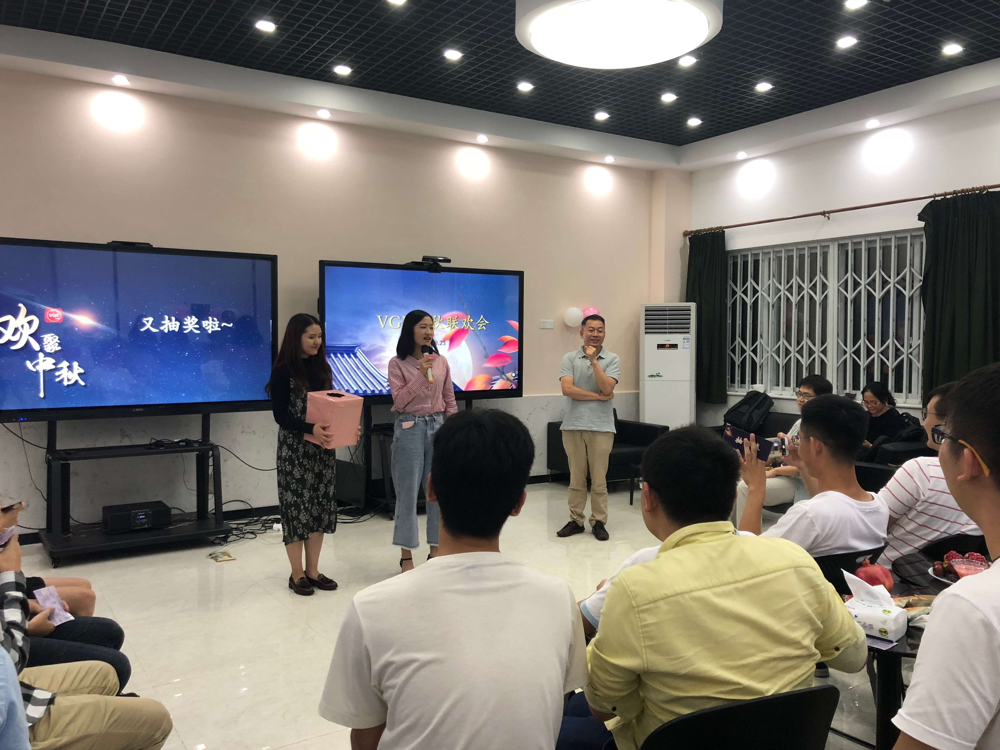
2018中秋联欢会视频
-
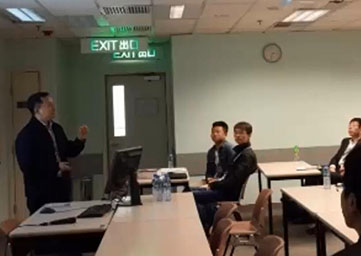
2015年会视频
-
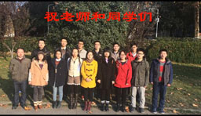
2014年会视频 part1
-
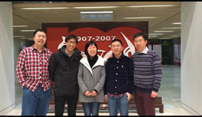
2014年会视频 part2
-
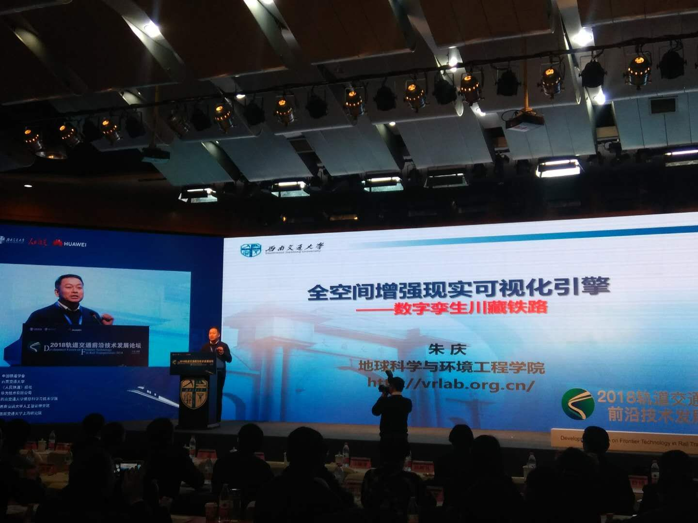
轨道交通前沿论坛
-
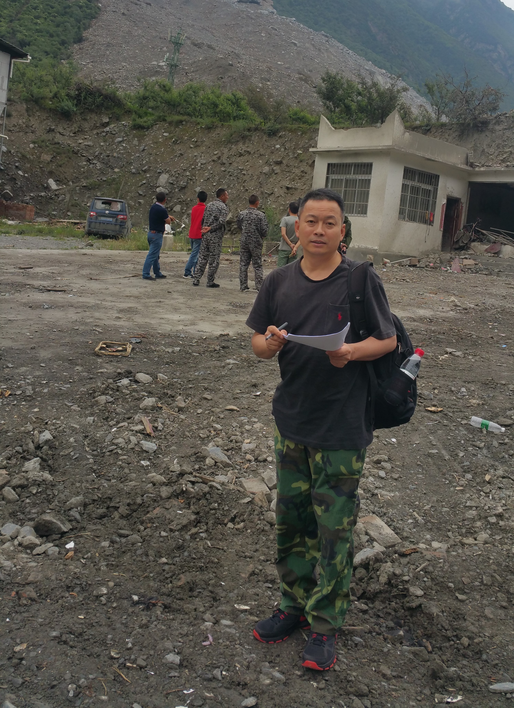
茂县滑坡现场2
-
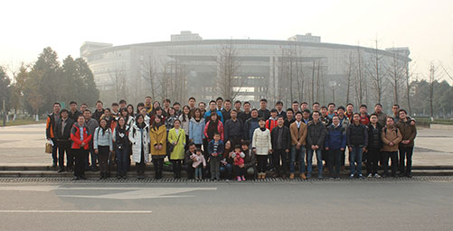
2015年会
-
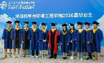
20200606毕业照
-
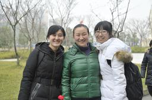
大大大师姐大大师姐大师姐
-
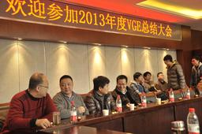
好开森！！
-
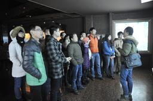
是什么文物都看呆了？
-
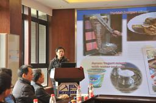
土耳其的汉堡，识得不？
-
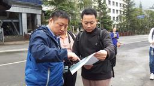
北川实验
-
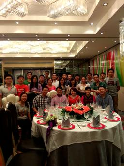
给我一杯能醉的酒！！


{kind=link}
{kind=link}
{kind=link}
{kind=link}
{kind=link}
{kind=link}
{kind=link}
{kind=link}
{kind=link}
{kind=link}
{kind=link}
{kind=link}
{kind=link}
{kind=link}
{kind=link}
{kind=link}
{kind=link}
{kind=link}
{kind=link}
{kind=link}
{kind=link}
{kind=link}
{kind=link}
{kind=link}
{kind=link}
{kind=link}
{kind=link}
{kind=link}
{kind=link}
{kind=link}
{kind=link}
{kind=link}
{kind=link}
{kind=link}
{kind=link}
{kind=link}
{kind=link}
{kind=link}
{kind=link}
{kind=link}
{kind=link}
{kind=link}
{kind=link}
{kind=link}